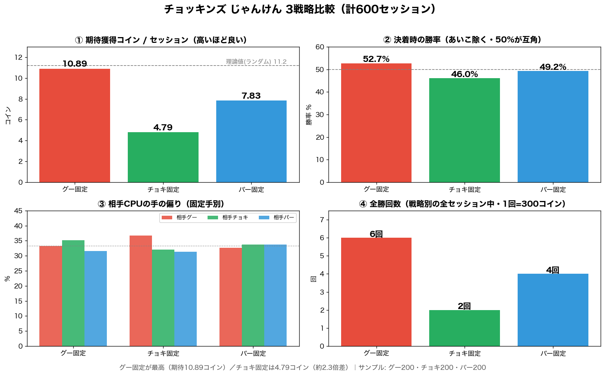

結論：チョッキンズは完全放置で月50〜150円。招待コードは無く、LINEログインだけで始められます。
最大のコツは、毎日のかちぬきじゃんけんを「グー」で固定すること。この記事は、筆者がコインボーナス1,768回・じゃんけん600回を実プレイして記録した一次データに基づき、放置の稼ぎ方とじゃんけんの最適解を解説します。
チョッキンズは月いくら稼げる？【結論】
放置メインのアプリなので、単体では月50〜150円程度が現実ラインです。歩く必要も大量の広告も不要で、アプリを開いてタンクを回収するだけ。「手間ゼロでコツコツ」が価値です。
チョッキンズとは？基本情報
「LINEポイ活チョッキンズ」は、LINEヤフー株式会社が2026年2月16日に配信した放置型ポイ活アプリです。キャラ「チョッキンズ」を育てると、放置で貯金箱（タンク）にコインが貯まり、LINEポイントに交換できます。
| 項目 | 内容 |
|---|---|
| 運営 | LINEヤフー株式会社 |
| 配信開始 | 2026年2月16日 |
| ジャンル | 放置型ポイ活（タンク回収） |
| 換金レート | 36,000コイン → 300 LINEポイント（120コイン＝1円） |
| 招待コード | なし（LINEログインだけで登録） |
稼ぎ方・始め方（招待コード不要）
チョッキンズに招待コード制度はありません。登録は「アプリDL → LINEでログイン」だけ。コード入力が不要なぶん、誰でもすぐ始められます。
① タンク回収（メイン）
時間経過で貯まったコインを回収。通常1タンク約15枚、動画広告で4倍の約60枚に。
② コインボーナス（回収時の抽選）
回収時にボーナスコインの抽選が発生（実測内訳は後述）。
③ かちぬきじゃんけん（2026年5月追加）
毎日0時・12時・18時の無料チャレンジ。5人抜きで勝ち進むほどコイン、全勝で300コイン。負けると勝ち数に応じた少額で終了。
④ チョッキンズの育成・スキル
「コインボーナス系」「どんぐりスピードアップ系」などのスキルで効率が上がります。
実測データ｜コインボーナス1,768回＆じゃんけん600回
コインボーナス1,768回の内訳
| 当たりコイン | 回数 | 確率 |
|---|---|---|
| 300コイン | 1回 | 0.06% |
| 100コイン | 57回 | 3.22% |
| 50コイン | 129回 | 7.30% |
| 20コイン | 287回 | 16.23% |
| 15コイン | 503回 | 28.45% |
| 7コイン | 791回 | 44.74% |
| 合計／平均 | 1,768回 | 1回17.7コイン |
約45%は最低の7コイン。300コインの大当たりは1,768回で1回だけでした。
【独自検証】じゃんけんは「グー固定」が最適

| 戦略 | 1回あたり期待コイン | 全勝回数 | 決着時の勝率※ |
|---|---|---|---|
| ✊ グー固定 | 10.89コイン | 6回 | 52.7% |
| 🖐 パー固定 | 7.83コイン | 4回 | 49.2% |
| ✌️ チョキ固定 | 4.79コイン | 2回 | 46.0% |
※決着時の勝率＝あいこを除く「勝ち÷（勝ち＋負け）」。50%が互角。
固定する手で相手の出方が変化し、チョキを出し続けると相手はグーを多めに返してくる（36.0%）傾向が見られました。相手がランダムなら理論値は約11.2コインで、グー固定はこれを上回りました。一方チョキ固定は理論値の半分以下＝読まれて狩られている可能性があります。
月収シミュレーション
実測値をもとにした試算です（コインボーナス17.7コイン・じゃんけんグー固定10.89コイン基準）。
| 使い方 | 1日の目安 | 月間（30日） |
|---|---|---|
| じゃんけんのみ（毎日3回・グー固定） | 約33コイン | 約980コイン（約8円） |
| 軽め放置（回収＋ボーナス10回＋じゃんけん） | 約210コイン | 約6,300コイン（約53円） |
| しっかり回収（広告4倍＋ボーナス20回＋じゃんけん） | 約430コイン | 約12,900コイン（約108円） |
メリット・デメリット
メリット
- 完全放置で貯まる（歩数も大量の広告も不要）
- LINEヤフー運営で安心感がある
- じゃんけんはグー固定なら理論値どおり戦える（実測で確認済み）
- キャラ育成があり、ゲーム感覚で続けやすい
デメリット
- 単体の収益は月50〜150円程度と少額
- コインボーナスは約45%が最低の7コイン、大当たりは超低確率
- 効率を上げるには結局ある程度の広告視聴が必要
- タンク上限があり、放置しすぎると取りこぼす
よくある質問
Q. チョッキンズは稼げる？
放置メインのため単体では月50〜150円程度。手間ゼロで貯まるのが価値で、他のLINE系と併用がおすすめです。
Q. 招待コードはある？
ありません。LINEログインだけで登録でき、コード入力は不要です。
Q. じゃんけんは何を出すのが得？
各手200セッション、計600回の実測ではグー固定が最適（1回10.89コイン）。チョキ固定は4.79コインと最弱でした。
Q. 換金レートは？
36,000コイン＝300 LINEポイント（120コイン＝1円）です。
まとめ・次の一歩
チョッキンズは「放置で淡々と貯める土台アプリ」。毎日のじゃんけんはグー固定が最適で、今回の実測ではチョキ固定の約2.3倍でした。ただし全勝回数によるブレもあるため、差がそのまま今後も再現すると断定はできません。単体は少額なので、招待コードでまとまった額がもらえる他アプリと組み合わせるのが賢い使い方です。
2. チョッキンズを育成してタンクを回収
3. 毎日のじゃんけんは「グー」固定で
招待コードでお得に始められる トリマ・カルティポイント もあわせてどうぞ。